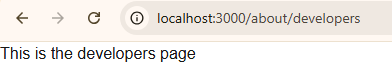

✔️Routing
For making Routes, in app folder make a folder (in this example it's about) and inside this folder make a file named page.jsx but when using rsc do not name the component page use a different name such as AboutPages.

Next.js is a popular React framework used to build modern web applications.
1️⃣Search for Next.js by Vercel
2️⃣Then in VScode terminal, paste npx create-next-app@latest and then answer the questions by agreeing to customize (we don't need typescript, we need Eslint and say no to default customization)
For making Routes, in app folder make a folder (in this example it's about) and inside this folder make a file named page.jsx but when using rsc do not name the component page use a different name such as AboutPages.
Nested Routing is also possible in Next.js. For that, we can create a folder (developers) inside a (about) folder and inside that new folder create a folder inside the about folder.


For making components, make the component folder inside scr NOT app and just like react we can make files like NavBar.jsx and Footer.jsx. And place this component in layout.js file and place it above or below {children}
For DaisyUI we need to intall it and place the plugin in global.css file under the tailwind import.

To make dynamic routes, we can make a folder named (according to example) [userId] inside user folder and inside it we will make a page.jsx file. In that page we need params, async, await just like in documentaion.

In user folder---

In [userId] folder---

We can create our custom nested layout for dashboard or something. Make sure the children is at the right place of layout.
Image tag in Next.js cannot be used without referencing it in next.config.mjs.Make sure to add alt, width and height in the Image tag.
In next.config.mjs---

not-found.jsx file can be created for Custom 404 page.
For active navlinks use const pathname = usePathname(). Plus remember to use 'use client' at the top of the file for using usePathname hook. We need to use className={pathname === '/' ? 'text-blue-400' : ''} for active links.

Google font can be used by importing it and then using className={font.className} in the element. For example, if we import inter font then we can use className={inter.className} in the element to apply the font. Check documentation for more details.
useState, useEffect, onClick etc needs use client on top of the file. It is better to seperate client component from server component. All components are server by default.
Any api data needs localhost link. So, we need to go to the json-server website.
1️⃣We can install json server using
npm i json-server in the terminal.
2️⃣Then, we will make a file in root where we will have the json data. We can add multiple json data in one file.
3️⃣We must make a server property.In package.json file, we will aee a script objects where we will add a server property like this server: "json-server --watch db.json --port 5000".
4️⃣Then, we use npm run server in terminal or command prompt.
| Feature | SSG (Static Site Generation) | ISR (Incremental Static Regeneration) | Dynamic Rendering (SSR) |
|---|---|---|---|
| When HTML is generated | At build time | At build time + regenerated after some time | On every request |
| Speed | Very fast | Fast | Slower than SSG/ISR |
| Data freshness | Static (doesn't change unless rebuild) | Updated after a set time (revalidate) | Always fresh |
| Server load | Very low | Low | High |
| Use case | Blogs, docs, portfolios | News sites, product pages | Dashboards, user-specific data |
| Example | Pre-built blog page | Product page updating every 10s | User profile page |
| Option | What it does | Rendering Type | Use Case |
|---|---|---|---|
| cache: 'no-store' | Does not cache data, fetch runs on every request | Dynamic (SSR) | Real-time data (dashboard, user data) |
| cache: 'force-cache' | Caches data and reuses it | Static (SSG) | Static content (blogs, docs) |
| next: { revalidate: 10 } | Re-fetches data after X(10) seconds | ISR | Content that updates occasionally (news, products) |